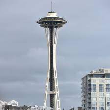
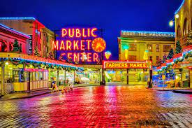
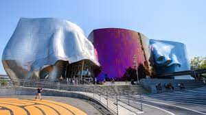

Attractions
Space Needle
The Space Needle in Seattle is a 605-foot tall landmark built for the 1962 World's Fair. Its futuristic design features a rotating observation deck and a restaurant with panoramic views. With its sleek architecture and colorful nighttime lighting, the Space Needle is an iconic symbol of Seattle's skyline and innovation.
Pike Place Market
Pike Place Market is a historic public market located in Seattle, Washington. Established in 1907, it is one of the oldest continuously operated farmers' markets in the United States. The market is renowned for its diverse array of vendors selling fresh produce, seafood, flowers, crafts, and specialty food items.
Museum of Pop Culture
The Museum of Pop Culture (MoPOP), located in Seattle, Washington, is a museum dedicated to exploring and celebrating the history and impact of popular culture. Designed by renowned architect Frank Gehry, the museum's striking exterior is characterized by its colorful, undulating metal panels.